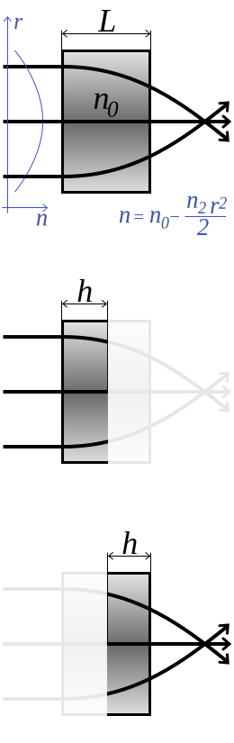

\[ n(r) = n_0 - \frac { n_2 \; r^2 } 2 \;\;\;\;\;\;\;\;\;\;\;\; r^2 = x^2 + y^2 \;\;\;\;\;\;\;\;\;\;\;\; \]

\[ n_2 > 0 \;\;\;\;\;\;\;\; \gamma = \sqrt \frac {n_2} {n_0} \] \[ M\bigg\rvert_{n_2 > 0} = \begin{bmatrix} \cos(\gamma L) & \cfrac {\sin(\gamma L)} {n_0 \gamma} \\ -n_0 \gamma \: \sin(\gamma L) & \cos(\gamma L) \end{bmatrix} \]
\[ n_2 < 0 \;\;\;\;\;\;\;\; \gamma = \sqrt \frac {|n_2|} {n_0} \] \[ M\bigg\rvert_{n_2 < 0} = \begin{bmatrix} \cosh(\gamma L) & \cfrac {\sinh(\gamma L)} {n_0 \gamma} \\ n_0 \gamma \: \sinh(\gamma L) & \cosh(\gamma L) \end{bmatrix} \]
\[ M_{LF}\bigg\rvert_{n_2 > 0} = \begin{bmatrix} \cos(\gamma h) & \cfrac {\sin(\gamma h)} {n_0 \gamma} \\ -\gamma \: \sin(\gamma h) & \cfrac {\cos(\gamma h)} {n_0} \end{bmatrix} \]
\[ M_{LF}\bigg\rvert_{n_2 < 0} = \begin{bmatrix} \cosh(\gamma h) & \cfrac { \sinh(\gamma h) } {n_0 \gamma} \\ \gamma \: \sinh(\gamma h) & \cfrac {\cosh(\gamma h)} {n_0} \end{bmatrix} \]
\[ M_{RT}\bigg\rvert_{n_2 > 0} = \begin{bmatrix} \cos(\gamma h) & \cfrac {\sin(\gamma h)} {\gamma} \\ -n_0 \gamma \: \sin(\gamma h) & n_0 \cos(\gamma h) \end{bmatrix} \]
\[ M_{RT}\bigg\rvert_{n_2 < 0} = \begin{bmatrix} \cosh(\gamma h) & \cfrac {\sinh(\gamma h)} {\gamma} \\ n_0 \gamma \: \sinh(\gamma h) & n_0 \cosh(\gamma h) \end{bmatrix} \]